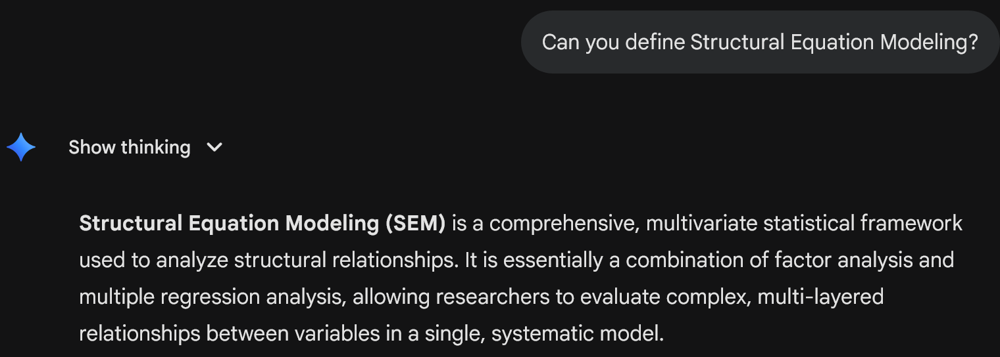
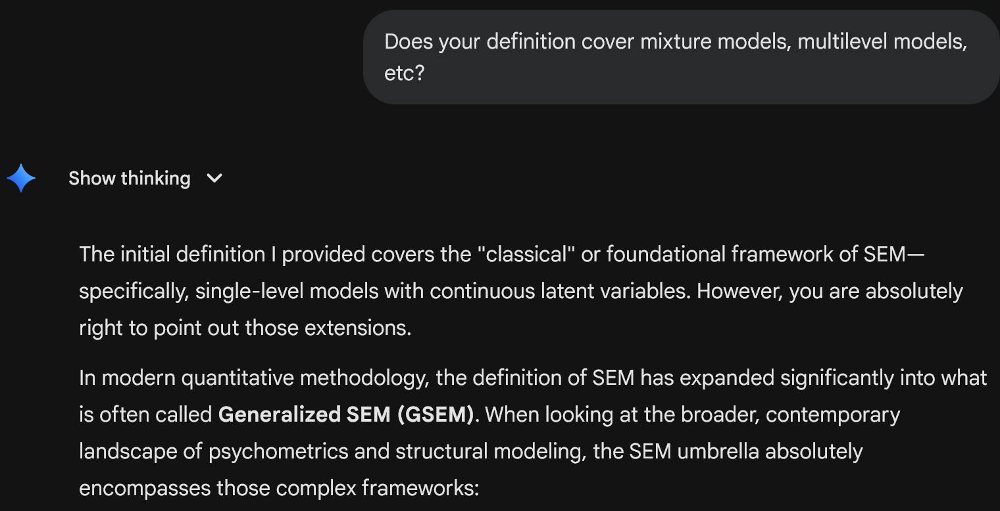
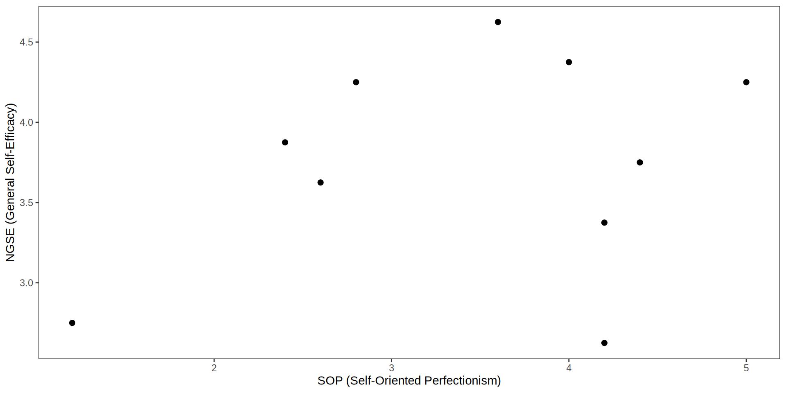
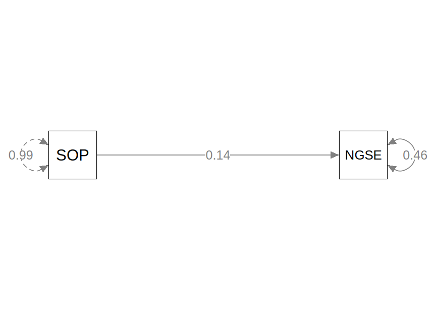
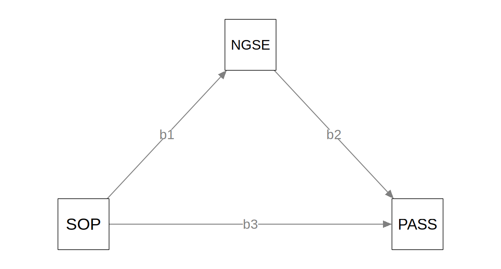
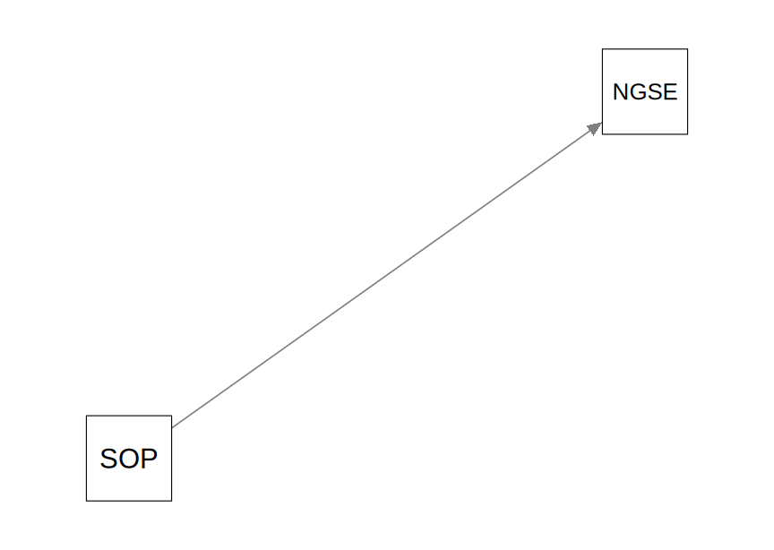
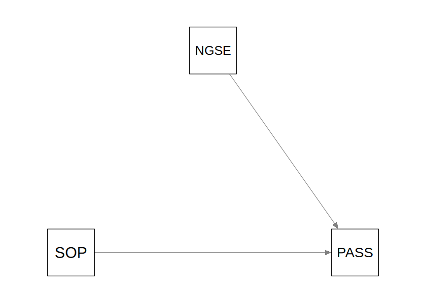
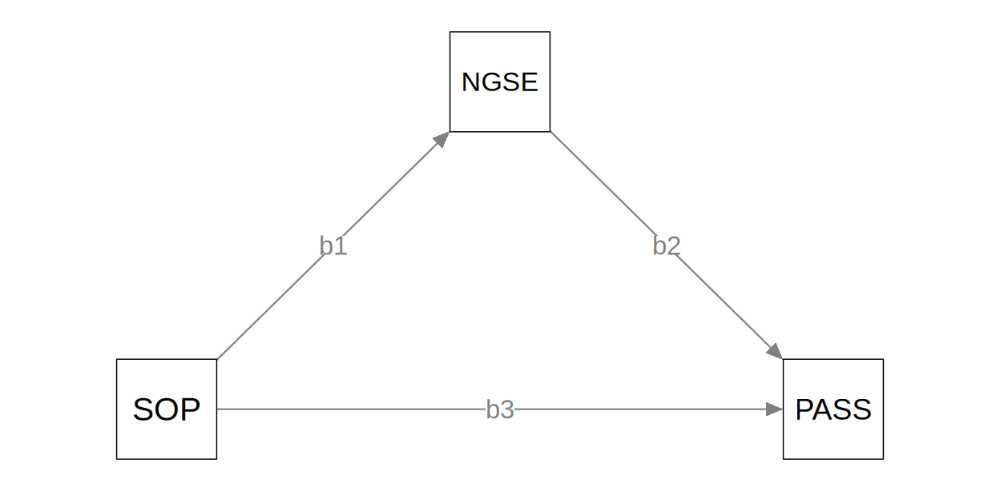
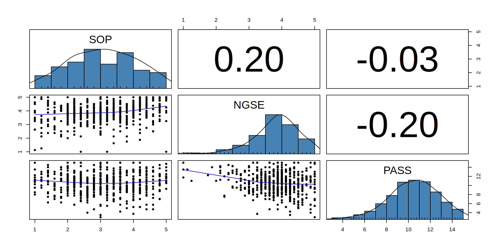
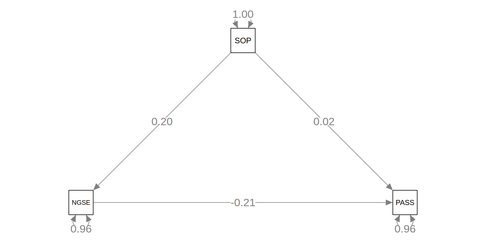

{kind=link}
| SOP | NGSE | |
|---|---|---|
| SOP | 0.99 | 0.14 |
| NGSE | 0.14 | 0.48 |
Path Analysis
Welcome!
What is SEM?


Brief History
Early History
- Biology/Genetics: Sewall Wright (1921) and path analysis
- Psychology: Charles Spearman (1904) and the “g factor”
- Economics: Ragnar Frisch, Trygve Haavelmo, and simultaneous equations
- Also advances in error-in-variables models and and estimators.
Modern-Day SEM
- Sociology: Otis Duncan (1966) and Peter Blau & Duncan (1967) on status attainment and path analysis
- Psychology & Education: Jöreskog (1969) and CFA and LISREL program
Some other names
- Covariance structure analysis
- Latent variable modeling
- Structural causal modeling
Example Data
- Data source: Williams & Edwards (2021, conceptual replication of Seo, 2008)
SOP: Self-Oriented Perfectionism (5 items)NGSE: General Self-Efficacy (8 items)PASS: Academic Procrastination (4 indicators)
- Final model: https://www.ncbi.nlm.nih.gov/core/lw/2.0/html/tileshop_pmc/tileshop_pmc_inline.html?title=Click%20on%20image%20to%20zoom&p=PMC3&id=10535626_CIPP-10-142208-g001.jpg
Regression to Path Analysis
Regression
\[ Y = \beta_0 + \beta_1 X + e \]

Regression and Covariance
The linear model implies that
\[ \text{Cov}(Y, X) = \beta_1 \text{Var}(X) \]
So we can write the covariance matrix of the observed variables as functions of the regression parameters
\[ \begin{aligned} \boldsymbol{\Sigma} & = \begin{bmatrix} \text{Var}(X) & \\ \text{Cov}(Y, X) & \text{Var}(Y) \end{bmatrix} \\ & = \begin{bmatrix} \text{Var}(X) & \\ \beta_1 \text{Var}(X) & \beta_1^2 \text{Var}(X) + \text{Var}(e) \end{bmatrix} = \begin{bmatrix} \psi_{11} & \\ \beta_1 \psi_{11} & \beta_1^2 \psi_{11} + \psi_{22} \end{bmatrix} \end{aligned} \]
In other words, we can estimate the model parameters
\(\beta_1\), \(\psi_{11}\), and \(\psi_{22}\)
using the covariance matrix as input.
Input covariance matrix:
Estimate: \(\psi_{11}\) = 0.99, \(\psi_{22}\) = 0.46, \(\beta_1\) = 0.14
\[ \begin{aligned} & \quad \ \begin{bmatrix} \psi_{11} & \\ \beta_1 \psi_{11} & \beta_1^2 \psi_{11} + \psi_{22} \end{bmatrix} \\ & = \begin{bmatrix} 0.99 & \\ 0.14 \times 0.99 & 0.14^2 \times 0.99 + 0.46 \end{bmatrix} \\ & = \begin{bmatrix} 0.99 & \\ 0.14 & 0.48 \end{bmatrix} \end{aligned} \]
Path Diagram

Interpretation
One unit difference in SOP is associated with a difference of 0.14 in NGSE, SE = 0.03, p < 0.001.
Path Analysis—More Y Variables

Simultaneous/Structural Equations
Two equations:
\[ \begin{aligned} \text{NGSE} & = \beta_1 \text{SOP} + e_1 \\ \text{PASS} & = \beta_2 \text{NGSE} + \beta_3 \text{SOP} + e_2 \end{aligned} \]


Path Tracing

\[ \begin{aligned} \boldsymbol{\Sigma} & = \begin{bmatrix} a & & \\ b & c & \\ d & e & f \end{bmatrix} \end{aligned} \]
\[ \begin{aligned} a & = \text{Var}(\text{SOP}) = \psi_{11} \\ b & = \text{Cov}(\text{NGSE}, \text{SOP}) = \beta_1 \psi_{11} \\ c & = \text{Var}(\text{NGSE}) = \beta_1^2 \psi_{11} + \psi_{22} \\ d & = \text{Cov}(\text{PASS}, \text{SOP}) = \beta_2 \beta_1 \psi_{11} + \beta_3 \psi_{11} \\ e & = \text{Cov}(\text{PASS}, \text{NGSE}) \\ & = \beta_2 (\beta_1^2 \psi_{11} + \psi_{22}) + \beta_3 \beta_1 \psi_{11} \\ f & = \text{Var}(\text{PASS}) \\ & = \beta_2^2 (\beta_1^2 \psi_{11} + \psi_{22}) + 2 \beta_2 \beta_3 \beta_1 \psi_{11} + \beta_3^2 \psi_{11} + \psi_{33} \end{aligned} \]
Matrix
\[ \begin{bmatrix} \text{SOP} \\ \text{NGSE} \\ \text{PASS} \end{bmatrix} = \begin{bmatrix} \alpha_1 \\ \alpha_2 \\ \alpha_3 \end{bmatrix} + \begin{bmatrix} 0 & 0 & 0 \\ \beta_1 & 0 & 0 \\ \beta_3 & \beta_2 & 0 \end{bmatrix} \begin{bmatrix} \text{SOP} \\ \text{NGSE} \\ \text{PASS} \end{bmatrix} + \begin{bmatrix} e_1 \\ e_2 \\ e_3 \end{bmatrix} \]
\[ \boldsymbol{\eta} = \boldsymbol{\alpha} + \mathbf{B} \boldsymbol{\eta} + \boldsymbol{\zeta} \]
Steps of Path Analysis
Adapted from Bollen (1989; 2026)
- Model specification
- Model identification
- Model estimation
- Test and evaluation
- (Model modification/respecification)
1. Model Specification
- Translate substantive knowledge/theory into path diagram(s)
- Arrows in the diagram represent causal relationships
- Directed arrow (→): weak assumption (path can be zero or nonzero)
- Absence of arrow: strong assumption (path is zero)
2. Model Identification
Can we uniquely determine model parameters from data?
- Basic SEM is about covariance structure
- Target: explain each element of the covariance matrix by some number of parameters
- Number of unique elements: \(p^* = p(p+1)/2\) for \(p\) observed variables
| SOP | NGSE | PASS | |
|---|---|---|---|
| SOP | 1 | ||
| NGSE | 2 | 3 | |
| PASS | 4 | 5 | 6 |
- Let \(t\) = number of free parameters in the model
- Underidentified: \(t > p^*\)
- Just-identified: \(t = p^*\) (also called “saturated”)
- Overidentified: \(t < p^*\)
- \(p^* - t\) = degrees of freedom (df) for model test
There are other requirements for identification, including
- Scaling of latent variables
- Measurement model identification
- Recursive vs. non-recursive models
- Empirical identification (e.g., no perfect multicollinearity, no Heywood cases)
See Kline (2023) for details.
3. Model Estimation
Estimate the model parameters, such as \(\beta\) (path coefficient), \(\psi\) (variances/covariances)
| lhs | op | rhs | label | est | se | z | pvalue | ci.lower | ci.upper |
|---|---|---|---|---|---|---|---|---|---|
| NGSE | ~ | SOP | b1 | 0.139 | 0.028 | 4.94 | 0.00000077 | 0.084 | 0.19 |
| PASS | ~ | NGSE | b2 | -0.673 | 0.137 | -4.92 | 0.00000087 | -0.941 | -0.4 |
| PASS | ~ | SOP | b3 | 0.036 | 0.094 | 0.38 | 0.70323637 | -0.149 | 0.22 |
| NGSE | ~~ | NGSE | 0.453 | 0.027 | 16.94 | 0 | 0.401 | 0.51 | |
| PASS | ~~ | PASS | 4.868 | 0.287 | 16.94 | 0 | 4.305 | 5.43 | |
| SOP | ~~ | SOP | 0.994 | 0 | NA | NA | 0.994 | 0.99 |
Common Estimators
| ML | Maximum Likelihood | |
| MLR | Maximum Likelihood, Robust (Huber–White Sandwich SE; Yuan–Bentler Scaled Test Statistic) | |
| ULS | Unweighted Least Squares |
| WLS | Weighted Least Squares |
| DWLS | Diagonally Weighted Least Squares |
| WLSMV | Weighted Least Squares, Robust Mean–Variance Adjusted |
See documentation of lavaan. Other estimators include two-stage least squares (2SLS), Bayesian estimation, etc.
4. Testing and Evaluation (Where SEM Shines)
- Test of individual parameters
- Wald test (z-test): \(\hat{\theta} / SE(\hat{\theta})\)
- Likelihood ratio test (LRT)
- Test of multiple parameters
- LRT comparing nested models
- Overall model fit (most meaningful for measurement models)
- Global \(\chi^2\) test
- Approximate fit indices (CFI, RMSEA, SRMR, etc.)
Using the lavaan Package
Data Exploration

Model Specification
lavaan operators
NGSE ~ SOPmeans “NGSE caused by SOP” (\(\beta_1\))SOP ~~ SOPmeans “SOP covaries with itself” (variance \(\psi_{11}\))NGSE ~~ NGSEmeans “NGSE covaries with itself” (error variance \(\psi_{22}\))
Exogeneous vs. Endogeneous Variables
SOPis exogenous (no arrows pointing to it); \(\psi_{11}\) is its varianceNGSEis endogenous (has arrows pointing to it); \(\psi_{22}\) is error variance
Model Identification
- Unique elements in covariance matrix: \(p^* = 3 (3 + 1) / 2 = 6\)
- Free parameters:
- 3 path coefficients: \(\beta_1\), \(\beta_2\), \(\beta_3\)
- 3 variances: \(\psi_{11}\), \(\psi_{22}\), \(\psi_{33}\)
- Just-identified: \(t = p^* = 6\) (df = 0)
- The parameters can perfectly reproduce \(\Sigma\)
Estimation
lhs op rhs label est se z pvalue ci.lower ci.upper std.all
1 NGSE ~ SOP b1 0.139 0.028 4.942 0.000 0.084 0.195 0.202
2 PASS ~ NGSE b2 -0.673 0.137 -4.918 0.000 -0.941 -0.405 -0.205
3 PASS ~ SOP b3 0.036 0.094 0.381 0.703 -0.149 0.221 0.016
4 NGSE ~~ NGSE 0.453 0.027 16.941 0.000 0.401 0.506 0.959
5 PASS ~~ PASS 4.868 0.287 16.941 0.000 4.305 5.432 0.959
6 SOP ~~ SOP 0.994 0.000 NA NA 0.994 0.994 1.000Standardized coefficients: change in SD of Y per 1 SD change in X
E.g., One SD difference in general self-efficacy corresponds to a -0.21 SD difference in academic procrastination, SE = 0.14, p < 0.001.
Path Diagram

Reporting Sample
We used the R package lavaan to test the indirect effect of SOP on PASS through NGSE, with maximum likelihood estimation. Figure X shows the path diagram with standardized coefficients (\(\beta\)). We found a significant and negative indirect effect of Self-Oriented Perfectionism on Academic Procrastination through General Self-Efficacy, as indicated by the significant positive path from SOP to NGSE, \(\beta_1\) = 0.2, SE = 0.03, p < 0.001, and the significant negative path from NGSE to PASS \(\beta_2\) = -0.21, SE = 0.14, p < 0.001.
Testing
- Beyond individual parameters, one can test
- Whether multiple parameters are all zero
- Whether two coefficients are equal (e.g., \(\beta_2\) vs. \(\beta_3\))
Example: Test \(H_0\): \(\beta_1\) = \(\beta_3\)
lhs op rhs label est se z pvalue ci.lower ci.upper std.all
1 NGSE ~ SOP b1 0.131 0.027 4.845 0 0.078 0.184 0.190
2 PASS ~ NGSE b2 -0.700 0.135 -5.204 0 -0.964 -0.437 -0.213
3 PASS ~ SOP b3 0.131 0.027 4.845 0 0.078 0.184 0.058
4 NGSE ~~ NGSE 0.453 0.027 16.941 0 0.401 0.506 0.964
5 PASS ~~ PASS 4.877 0.288 16.941 0 4.313 5.441 0.956
6 SOP ~~ SOP 0.994 0.000 NA NA 0.994 0.994 1.000Example: Test \(H_0\): \(\beta_1\) = \(\beta_3\) (cont’d)
Likelihood ratio test: not significant, not rejecting \(H_0\)
=> Insufficient evidence that we need different parameters for \(\beta_1\) and \(\beta_3\)
=> \(\beta_1\) and \(\beta_3\) are not significantly different from each other.
Exercise
Run the R code in “note/data-exploration.R” to explore the data.
Fit the full path model using
we_data:Fit a restricted path model where the direct effect of
SOPonPASSis removed:What is the p-value from the likelihood ratio test comparing the two models, using the code below?
When you finish, go to next page and answer the question in the Slido poll!
Switch Slido to # 1974000

marklhc.github.io/sem-workshop